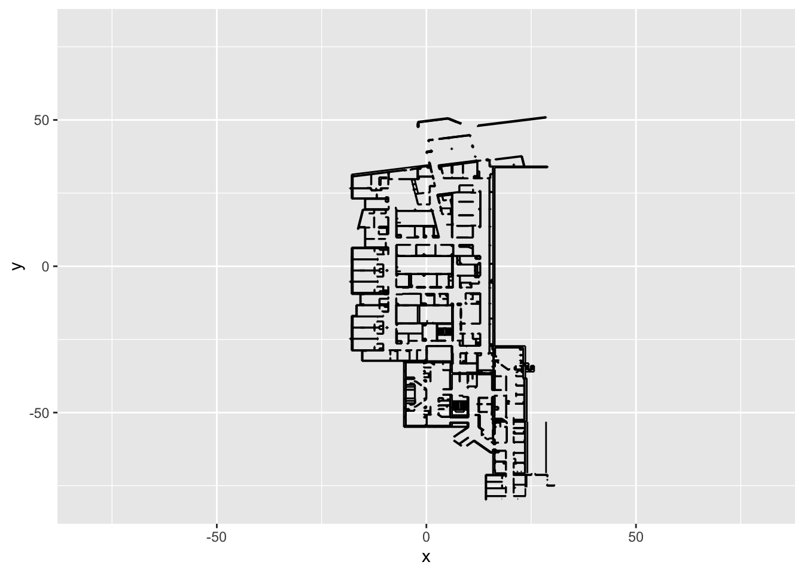
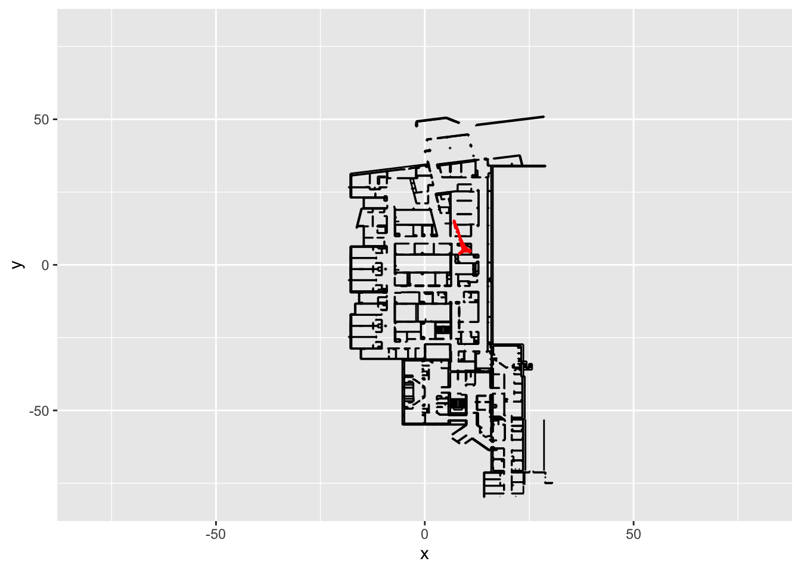
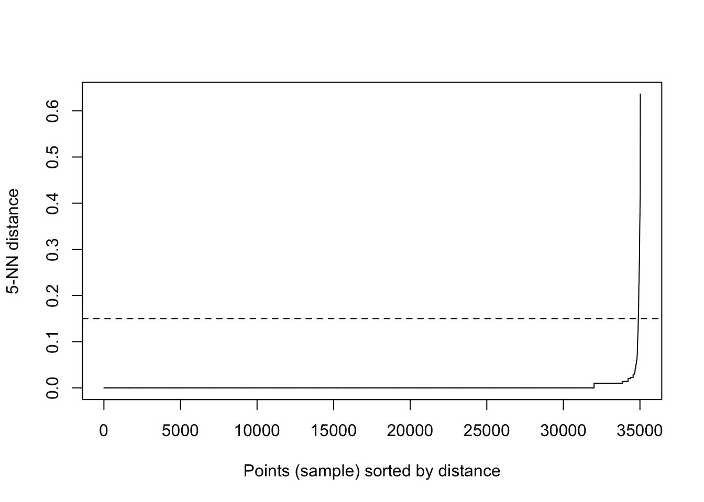
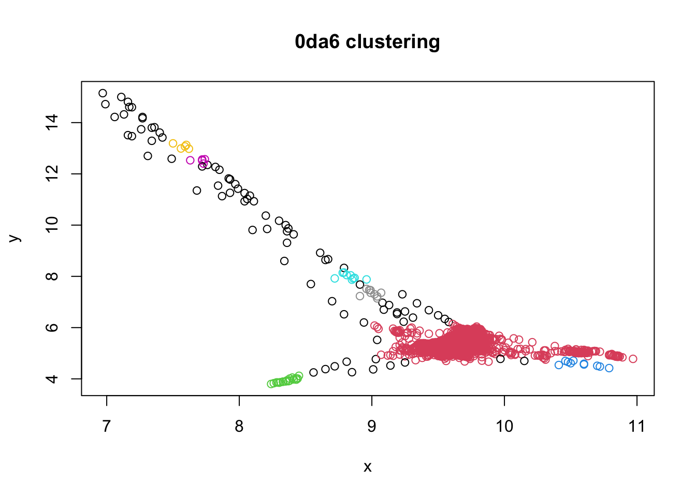
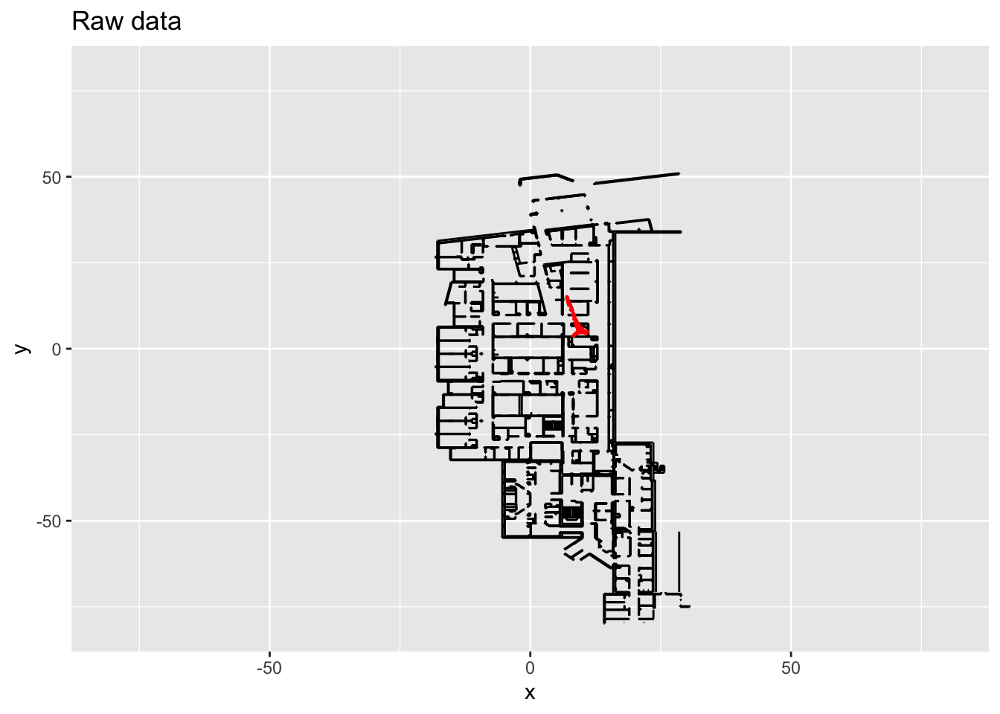
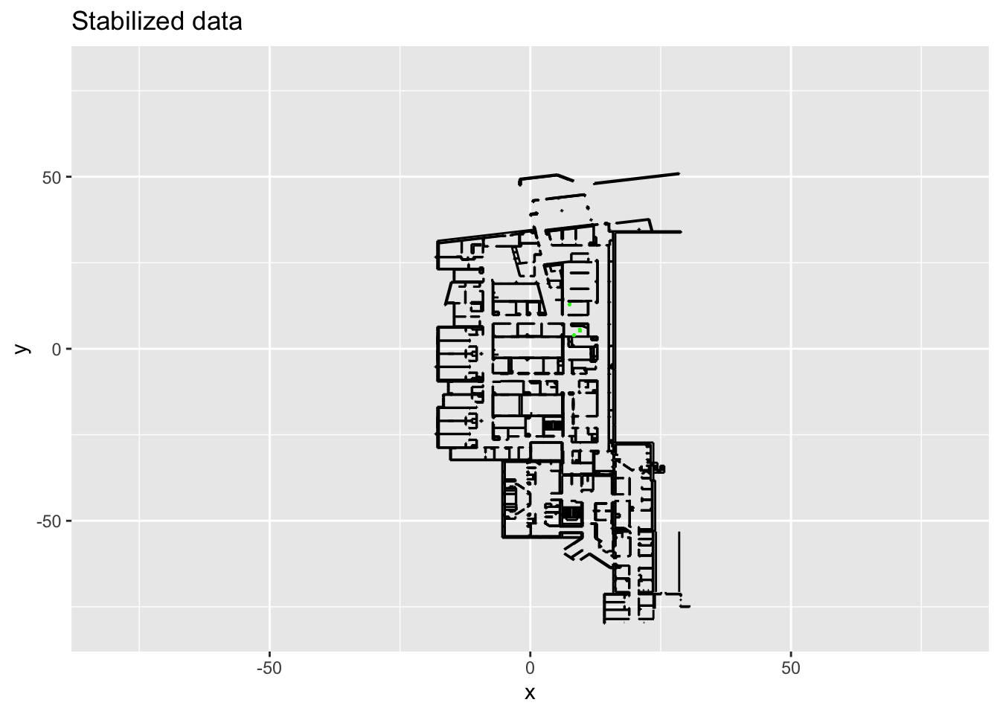
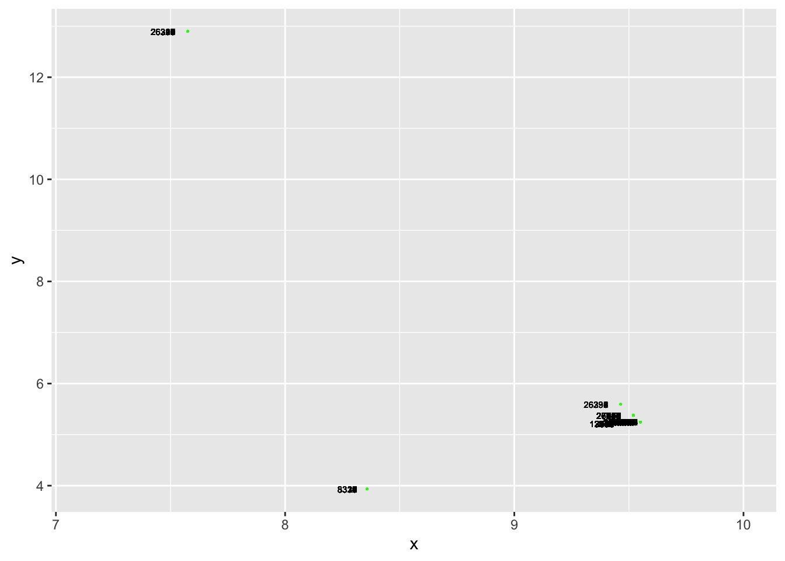
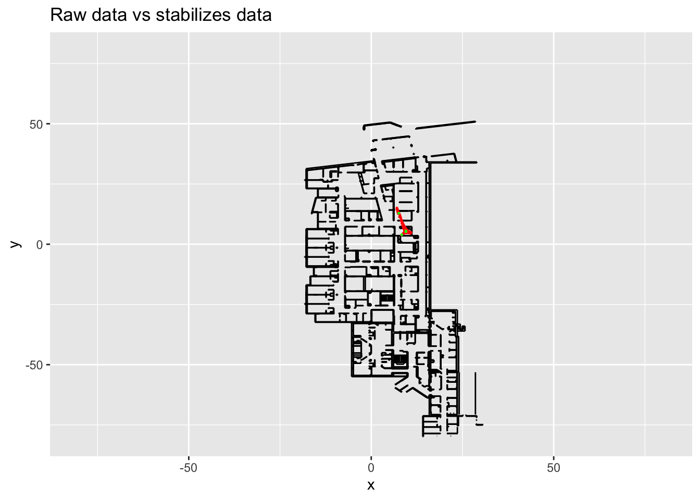

library(rjson)
library("writexl")
library("lubridate")##
## Attachement du package : 'lubridate'## Les objets suivants sont masqués depuis 'package:base':
##
## date, intersect, setdiff, unionlibrary(manipulate)
library(sp) # for polygons
library(TeachingDemos) # for zoomplot##
## Attachement du package : 'TeachingDemos'## L'objet suivant est masqué depuis 'package:manipulate':
##
## sliderlibrary(fpc) # for dbscan clustering
library(dbscan) # for KNN dbscan##
## Attachement du package : 'dbscan'## L'objet suivant est masqué depuis 'package:fpc':
##
## dbscanlibrary(raster) # for distance calculation
library(readxl)
library(ggplot2)
library(gganimate)##
## Attachement du package : 'gganimate'## L'objet suivant est masqué depuis 'package:raster':
##
## animatelibrary(gifski)
library(tictoc)`0da6_8nov21` <- read.csv2("~/Devellyn/traitement_data position/Firminy installation/Firminy installation/data/0da6_8nov21.csv")
tagId <- unique(`0da6_8nov21`$tag)Wall_lignes_firminy <- read_excel("~/Devellyn/traitement_data position/Firminy installation/Walls_ligne3_Origine(-15,-30).xlsx")
Wall_lignes_firminy <- as.data.frame(Wall_lignes_firminy)
Wall_lignes_firminy$`Start X'` <- as.numeric(Wall_lignes_firminy$`Start X'`)/100
Wall_lignes_firminy$`Start Y'` <- as.numeric(Wall_lignes_firminy$`Start Y'`)/100
Wall_lignes_firminy$`End X'` <- as.numeric(Wall_lignes_firminy$`End X'`)/100
Wall_lignes_firminy$`End Y'` <- as.numeric(Wall_lignes_firminy$`End Y'`)/100
# plot(c(-120, 20), c(-120, 20), type="n", main =("with outliers") )
# segments(Wall_lignes_firminy$`Start X'`, Wall_lignes_firminy$`Start Y'`, Wall_lignes_firminy$`End X'`, Wall_lignes_firminy$`End Y'`)
walls <- Wall_lignes_firminy[,7:12]
colnames(walls) <- c("endx", "endy", "endz", "x", "y", "z")
plan <- ggplot()+
geom_segment(data = walls, mapping = aes(x = x, y = y, xend=endx, yend=endy))+
xlim(-80, 80)+
ylim(-80,80)
print(plan)## Warning: Removed 154 rows containing missing values (geom_segment).
x <- intersect(which(`0da6_8nov21`$date> "2021-11-08 08:00:00"), which(`0da6_8nov21`$date< "2021-11-08 10:00:00"))
data <- `0da6_8nov21`[x,]
data.point <- plan+
geom_point(data = data, aes(x, y), size=0.1, color="red")
print(data.point)## Warning: Removed 154 rows containing missing values (geom_segment).
# write_xlsx(data, '?.xlsx')
# points <- plan+
# geom_point(data = data, aes(x, y), size=0.1, color="red")+
# # fFor animating the plot
# labs(title = '0da6: {frame_time}', x = 'X', y = 'Y') +
# transition_time(as_datetime(data$record_timestamp)) +
# ease_aes('linear')
#
# animate(points, fps=1)
#
# anim_save('~/Devellyn/traitement_data position/Firminy installation/Firminy installation/data/0da6-8non21-8h-10h.gif')
## Warning in dbscan(xy[, 2:3], eps = 0.15, MinPts = 5): converting argument MinPts
## (fpc) to minPts (dbscan)!## DBSCAN clustering for 35023 objects.
## Parameters: eps = 0.15, minPts = 5
## The clustering contains 7 cluster(s) and 83 noise points.
##
## 0 1 2 3 4 5 6 7
## 83 34882 20 10 9 5 5 9
##
## Available fields: cluster, eps, minPts## [1] 8
## Warning: Removed 154 rows containing missing values (geom_segment).
## Warning: Removed 154 rows containing missing values (geom_segment).
## Warning: position_dodge requires non-overlapping x intervals
## Warning: Removed 154 rows containing missing values (geom_segment).